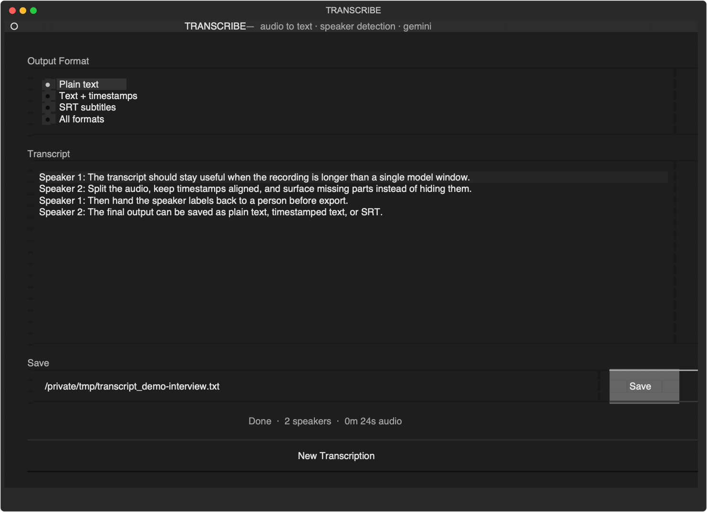
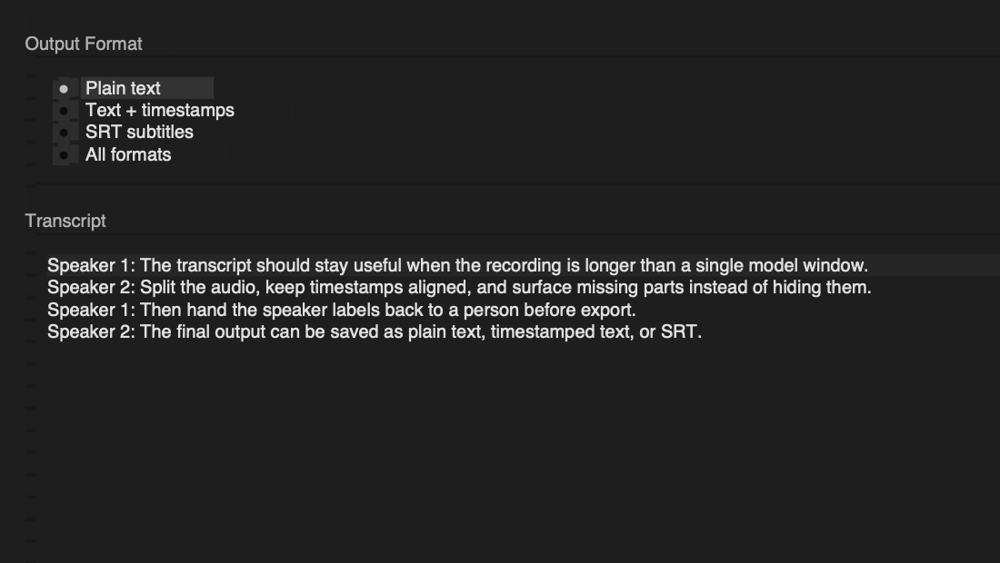
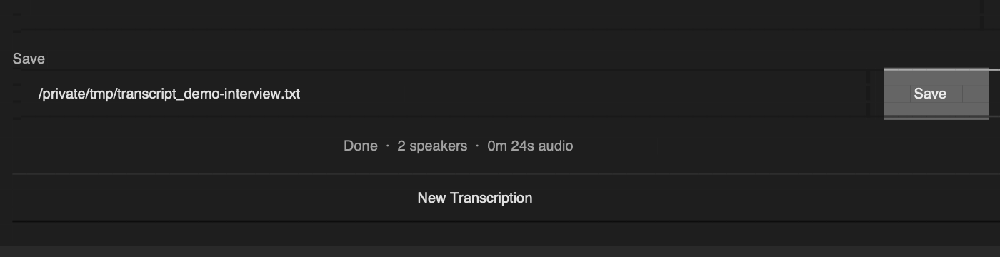

Terminal audio workbench · v0.4.0
Long recordings, split without losing the thread.
A Textual app that preflights long audio, keeps chunk timestamps aligned, returns speaker labels for review, and exports text or SRT from the terminal.
25m 00s3 bounded chunksFree key · work stays sequential · remaining request pressure stays visible.
00 / product demo
From local guard to reviewed export in nine seconds.
The recording exercises the same deterministic browser proof below: a local free-key guard, a paid-key concurrency preview, a speaker rename, and SRT output. Action callouts keep every transition explicit.
DETERMINISTIC BROWSER PROOF · SANITIZED TEXT · NO AUDIO UPLOAD · NO MODEL REQUEST
01 / deterministic preflight
See the stop condition before the model call.
Change duration, entered session usage, or key tier. This sandbox mirrors the repository’s chunk and request-pressure rules without uploading audio or calling Gemini.
BROWSER-ONLY PROOF · NO AUDIO UPLOAD · NO API KEY · NO MODEL REQUEST
preflight result
Review quota02 / human review
Speaker labels stay editable before export.
Rename the sanitized demo speakers and switch output formats. The terminal app also exposes audio preview for speaker identification; this browser proof keeps the interaction silent and deterministic.
03 / system path
A visible pipeline, not a single spinner.
The application separates preparation, provider work, and human review. Missing chunks are surfaced as errors instead of being embedded into a transcript as if they succeeded.
Choose a local audio file and inspect duration.
Apply the process-local free-key request guard.
Bound long recordings into ten-minute parts.
Track provider file readiness separately.
Run sequentially or with bounded concurrency.
Preview and rename detected speakers.
Save text, timestamps, or SRT.
FAILURE PATH · provider quota exhaustion stops remaining free-key work; upload and transcription failures keep their part and phase visible.
04 / source-rendered interface
The terminal app is the product.
This is the current Textual result screen rendered from public source with a sanitized 24-second transcript. The text demonstrates interface behavior; it is not presented as a completed Gemini transcription.



SANITIZED DEMO DATA · CURRENT PUBLIC TEXTUAL UI · NO CLAIM OF MODEL ACCURACY OR CUSTOMER USE
Python 3.10+, uv, ffmpeg, and ffprobe are required to run the terminal app.
The application uses a user-supplied Gemini API key. The local guard cannot read project-level provider usage; limits and output quality are not guaranteed here.
This page tests deterministic planning and formatting only. It does not accept files or send requests.